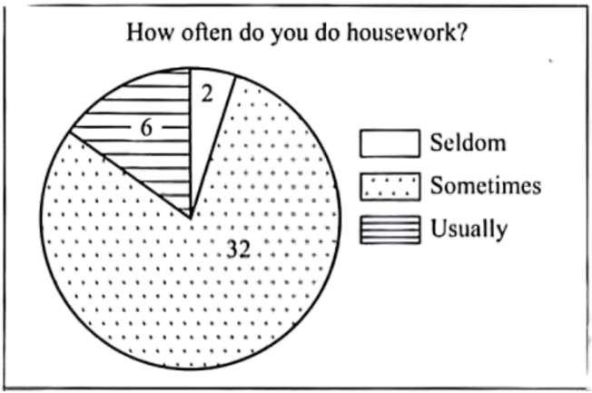

2025年北京市中考英语真题 原卷解析
2025年北京市初中学业水平考试
英语试卷
考生须知：
1.本试卷共10页，共两部分，五道大题，38道小题，满分60分，考试时间为90分钟。
2.在试卷草稿纸准确填写准确填写姓名、准考证号和座位号。
3.试题答案一律填涂或书写在答题卡上，在试卷上作答无效。
4.在答题卡上，选择题用2B铅笔作答，其他试题用黑色字迹签字笔作答。
5.考试结束，请将本试卷、答题卡和草稿纸一并交回。
第一部分
本部分共33题，共40分。在每题列出的四个选项中，选出最符合题目要求的一项。
一、单项填空（每题0.5分，共6分）
从下面各题所给的A、B、C、D四个选项中，选择可以填入空白处的最佳选项。
1. My sister is good at singing. ________ can even sing some French songs.
A. IB. HeC. YouD. She
【答案】D
【解析】
【详解】句意：我妹妹擅长唱歌。她甚至能唱一些法语歌曲。
考查代词辨析。I我；He他；You你；She她。根据“My sister is good at singing.”可知，此处指“我”妹妹会唱法语歌曲，指第三人称，且为女性，故用代词She指代。故选D。
2. These Chinese astronauts will stay in the space station ________ six months.
A. atB. onC. toD. for
【答案】D
【解析】
【详解】句意：这些中国宇航员将在空间站停留六个月。
考查介词辨析。at后接具体时刻；on后接具体某一天；to到；for后接一段时间。根据“stay in the space station…six months.”可知，宇航员将在空间站待六个月，for+一段时间。故选D。
3. —Mom, ________ I go to the cinema with my classmates this Sunday afternoon?
—Yes, of course you can.
A. canB. mustC. needD. should
【答案】A
【解析】
【详解】句意：——妈妈，这个星期天下午我能和同学们一起去看电影吗？——是的，你当然可以。
考查情态动词。can可以；must必须；need需要；should应该。根据“of course you can”可知，此处表示请求，应用句式Can I…?。故选A。
4. The National Library of China is ________ public library in Asia.
A. largeB. largerC. largestD. the largest
【答案】D
【解析】
【详解】句意：中国国家图书馆是亚洲最大的公共图书馆。
考查最高级。large大的，原级；larger更大的，比较级；largest最大的，最高级；the largest最大的，最高级。根据“in Asia”可知，此处含比较范围，在亚洲境内的图书馆，三者以上的比较用最高级，形容词最高级前加定冠词the。故选D。
5. —Steve, ________ did you begin to learn how to play chess?
—About two years ago.
A. whatB. whenC. whyD. where
【答案】B
【解析】
【详解】句意：——Steve，你什么时候开始学习下棋的？——大约两年前。
考查特殊疑问句。what什么；when什么时候；why为什么；where在哪里。根据“About two years ago.”可知，此处询问时间，用when提问。故选B。
6. Janet has done a lot for us, ________ we want to write her a thank-you letter.
A. orB. butC. soD. for
【答案】C
【解析】
【详解】句意：珍妮特为我们做了很多，所以我们想给她写一封感谢信。
考查连词辨析。or或者；but但是；so因此；for因为。分析句子可知，因为珍妮特为我们做了很多，所以给她写感谢信，前后是因果关系，应用so连接。故选C。
7. Mary ________ a picture when her dad got home yesterday evening.
A. drawsB. was drawingC. is drawingD. will draw
【答案】B
【解析】
【详解】句意：昨天晚上，当她的爸爸回家时，玛丽正在画画。
考查动词时态。本句是含when引导的时间状语从句的复合句，从句动作发生时，主句动作正在进行，从句是一般过去时，主句应为过去进行时，结构是was/were doing，主语是第三人称单数，be动词用was。故选B。
8. Charlie ________ his grandparents every weekend. He loves them very much.
A. visitsB. was visitingC. will visitD. has visited
【答案】A
【解析】
【详解】句意：查理每个周末都会去看望他的祖父母。他非常爱他们。
考查动词时态。根据“every weekend”可知，此处描述经常性的动作，应为一般现在时，主语是第三人称单数，谓语动词用其单三形式。故选A。
9. —Peter, did you play table tennis with your friends after school yesterday?
—No, I didn’t. We ________ vegetables in our school garden.
A. waterB. have wateredC. wateredD. are going to water
【答案】C
【解析】
【详解】句意：——彼得，你昨天放学后和朋友们打乒乓球了吗？——不，我没有。我们在学校花园里浇了蔬菜。
考查动词时态。根据“after school yesterday”可知，此处描述过去发生的事情，应为一般过去时，谓语动词用其过去式。故选C。
10. Many international students ________ to visit our school since last year.
A. are comingB. have comeC. cameD. will come
【答案】B
【解析】
【详解】句意：自去年以来，许多国际学生来参观我们学校。
考查动词时态。根据“since last year”可知，句子时态是现在完成时，结构是have/has done。故选B。
11. Language learning apps ________ by more and more people these days.
A. useB. usedC. are usedD. were used
【答案】C
【解析】
【详解】句意：如今，越来越多的人在使用语言学习应用程序。
考查动词时态及被动语态。根据“these days”可知，时态是一般现在时。结合“by”可知，此处是被动语态，应用程序被人们使用。故选C。
12. — Linda, do you know ________ for the school trip this term?
— Yes. We are going to the Capital Museum.
A. where we are goingB. where we wentC. where are we goingD. where did we go
【答案】A
【解析】
【详解】句意：——琳达，你知道这学期我们学校旅行要去哪里吗？——是的。我们要去首都博物馆。
考查宾语从句。根据“do you know...for the school trip this term”可知，空处填入的是宾语从句，用陈述句序，因此排除选项C和D（均为疑问语序）；结合回答“We are going to the Capital Museum.”可知，此时宾语从句用一般将来时，排除选项B（为一般过去时）。故选A。
二、完形填空（每题1分，共8分）
阅读下面的短文，掌握其大意，然后从短文后各题所给的A、B、C、D四个选项中，选择最佳选项。

The New Year party was usually held at my aunt’s house and my favorite part was the apple cake. At the age of 11, when I first found out that my grandfather, who was never in the kitchen, was the master behind it, I was greatly ____13____ . And I thought that this was the perfect chance to get the recipe (制作方法), and that I could actually have a time to ____14____ with him.
Since then, I would go to my aunt’s early on the morning of New Year’s Day, and we’d make the cake together happily. I was amazed that Grandpa could peel an apple in one rind. And we’d mix everything and put it into the oven. Once the cake was done, the house would immediately smell like apples.
But as I got older, so did Grandpa.
One New Year’s Day, as I was taking out the apples from the shopping bag ____15____ as usual, he looked at me and said, “Sophia, what are you doing?”
I was shocked. I knew that he was beginning to forget things, but I didn’t think he would forget this. It was our ___16___ . It was our time of bonding (联络感情). My heart ached. “We’re making the apple cake. You know, we always make a cake on New Year’s Day.”
And he said, “Apple cake? Can you teach me?”
Now, I was terrified (很害怕的). Still, I ____17____ Grandpa in making the cake because I didn’t want this tradition to die. But the whole time it just didn’t feel the same.
Fast-forward to this New Year, Grandpa was in hospital, and we’d have our family get together there. To bring a bit of ____18____ to the family, I decided to make the apple cake at home by myself. But I was ____19____ myself the whole time. I was afraid the cake was going to taste terrible because it didn’t have Grandpa’s touch.
At the hospital, everyone was surrounding (围绕) him, creating some ____20____ . Grandpa looked down at the cake, and then looked back up at me and smiled. And I felt memories of our shared moments flooding back to him.
Even though he was in hospital, it felt like we had made the cake together.
13. A. surprisedB. worriedC. scaredD. satisfied
14. A. compareB. connectC. studyD. perform
15. A. cheerfullyB. proudlyC. nervouslyD. curiously
16. A. recordB. ruleC. interestD. tradition
17. A. servedB. guidedC. followedD. protected
18. A. trustB. companyC. respectD. comfort
19. A. cheatingB. excusingC. doubtingD. thanking
20. A. spaceB. wealthC. magicD. warmth
【答案】13. A 14. B 15. A 16. D 17. B 18. D 19. C 20. D
【解析】
【导语】本文讲述作者与祖父制作苹果蛋糕的传统，以及祖父年老失忆后，作者努力延续这一温馨回忆的故事。
【13题详解】
句意：11岁时，当我第一次发现我的祖父是厨房的主人时，我非常惊讶。
surprised惊讶的；worried担心的；scared害怕的；satisfied满意的。根据“who was never in the kitchen”与“master behind it”的对比，可知此处指非常惊讶。故选A。
【14题详解】
句意：我认为这是获得食谱的绝佳机会，我实际上可以有时间和他联系。
compare比较；connect连接；study学习；perform表演。根据“ and that I could actually have a time to…with him.”及后文提到的“bonding”可知，此处指有时间可以和祖父联系。故选B。
【15题详解】
句意：一个元旦，当我像往常一样高兴地从购物袋里拿出苹果时，他看着我说：“索菲娅，你在干什么？”
cheerfully高兴地；proudly骄傲地；nervously紧张地；curiously好奇地。根据“and we’d make the cake together happily.”及“as usual”可知，此处指作者像往常一样非常高兴。故选A。
【16题详解】
句意：这是我们的传统。
record记录；rule规则；interest兴趣；tradition传统。根据“The New Year party was usually held at my aunt’s house and my favorite part was the apple cake.”可知，在新年夜制作苹果蛋糕是作者一家的传统。故选D。
【17题详解】
句意：尽管如此，我还是指导爷爷做蛋糕，因为我不想让这个传统消亡。
served服务；guided指导；followed跟随；protected保护。根据“Can you teach me?”及“ I…Grandpa in making the cake”可知，祖父忘记了如何制作苹果蛋糕，故此处指作者指导祖父制作苹果蛋糕。故选B。
【18题详解】
句意：为了给家人带来一点安慰，我决定自己在家做苹果蛋糕。
trust信任；company陪伴；respect尊重；comfort安慰。根据“Grandpa was in hospital…I decided to make the apple cake at home by myself.”可知，祖父住院了，为了让家人感到一些安慰，作者决定自己做苹果蛋糕。故选D。
【19题详解】
句意：但我一直在怀疑自己。
cheating欺骗；excusing原谅；doubting怀疑；thanking感谢。根据“I was afraid the cake was going to taste terrible because it didn’t have Grandpa’s touch.”可知，作者在做苹果蛋糕时感到害怕，担心蛋糕味道不好，始终怀疑自己。故选C。
【20题详解】
句意：在医院里，每个人都围着他，制造了一些温暖。
space空间；wealth财富；magic魔法；warmth温暖。根据“At the hospital, everyone was surrounding (围绕) him, creating some…and smiled.”可知，每个人都围绕着祖父，营造了一些温暖，所以祖父笑了。故选D。
三、阅读理解（每题2分，共26分）
（一）
下列每个图片代表一处旅游目的地，请根据人物的旅行计划匹配最适合的图片，并将图片所对应的选项（A、B、C、D）填在相应位置上，其中一个选项为多余选项。
____21____  I want to travel to Africa and see the animals. I’d love to take lots of photos of elephants, giraffes and other animals. I’d like to try sleeping in a tent in the wild.
I want to travel to Africa and see the animals. I’d love to take lots of photos of elephants, giraffes and other animals. I’d like to try sleeping in a tent in the wild.
____22____  I’d like to go to North America. I love to walk in forests, climb trees and hike in the mountains. Perhaps I could go birdwatching, too. I enjoy exploring nature.
I’d like to go to North America. I love to walk in forests, climb trees and hike in the mountains. Perhaps I could go birdwatching, too. I enjoy exploring nature.
____23____  I’ve decided to tour Australia with my family. My plan is to go to the beach, swim in the sea and sit in the sun. Also, we’re going to play volleyball on the beach.
I’ve decided to tour Australia with my family. My plan is to go to the beach, swim in the sea and sit in the sun. Also, we’re going to play volleyball on the beach.
【答案】21. D 22. B
23. C
【解析】
【导语】本文介绍了Tina、Kevin、Nancy的旅行计划，根据人物的旅行计划匹配最适合的图片。
【21题详解】
根据“I’d love to take lots of photos of elephants, giraffes and other animals.”可知，Tina想要给大象、长颈鹿等动物拍照，图片D中有大象、长颈鹿，与其匹配。故选D。
【22题详解】
根据“I love to walk in forests, climb trees and hike in the mountains.”可知，Kevin想要在森林中散步、爬树、去山上远足等，图片B中有山、树木，与其匹配。故选B。
【23题详解】
根据“My plan is to go to the beach, swim in the sea and sit in the sun.”可知，Nancy想要去海滩，在海里游泳，沐浴阳光，图片C中有大海、海滩，与其匹配。故选C。
（二）阅读下列短文，根据短文内容，从短文后各题所给的A、B、C、D四个选项中，选择最佳选项。
B

When I was young, flowers filled my mom’s garden each spring. I never thought that Mom had done much about them behind the scenes (在幕后), until she shared her secret with me.
One day last November, Mom and I spent a whole morning planting flower bulbs. I dropped one in each hole and covered it over with soil. My fingers were numb (麻木的) by the time we finished. However, the ground looked just as flower bulb empty and flat as it had been before. Then Mom told me to wait. I didn’t only wait—I watched. I watched hopefully all through the winter...
On the last day of April, I went outside to find the garden full of colorful flowers. Our hard work paid off.
“My boy, tomorrow morning,” Mom said, “we will walk the neighborhood and leave a basket of flowers on each doorstep.”
“What?” I almost cried. “Are we selling our flowers?”
“Of course not,” she said excitedly. “In fact, nobody will even know they’re from us. We’ll leave them at our neighbors’ as a surprise. Doesn’t that sound fun?”
“To me, it doesn’t sound fun at all” I replied unwillingly. “They’re our flowers. We should keep them for ourselves!”
“Flowers are like kindness,” Mom said. “Their beauty is meant to be shared.”
Early the next morning, Mom woke me up. We brought the baskets and stopped near the first house. I took one basket, set it by the doorstep and rang the bell. Then we quickly ran away, ducked behind the trees and waited.
Finally, the door opened. A man came out, looking surprised. He picked up the flower basket and then smiled. Mom hugged me. I got a good feeling inside. Now I knew what she meant about beauty sharing. I couldn’t wait to get to the next house.
By the time we got home, I was grinning (咧着嘴笑) from ear to ear. The garden was empty, but my heart was full.
24. How did the writer feel when he watched the garden during the winter?
A. Empty.B. Excited.C. Hopeful.D. Bored.
25. What happened to the baskets of flowers in the end?
A. They were sold for pocket money.B. They were given to the neighbors.
C. They were collected for recycling.D. They were put up on a flower show.
26. What made the writer’s heart full?
A. The joy of spreading kindness.B. The excitement of growing flowers.
C. The honor of helping people in need.D. The happiness of getting close to nature.
【答案】24. C 25. B 26. A
【解析】
【导语】本文是一篇记叙文，主要讲述了作者和母亲一起种植花并在春天将鲜花分享给邻居的故事。通过这一经历，作者理解了“分享美丽”的意义，并感受到了传播善意的快乐。
【24题详解】
细节理解题。根据文章第二段“I watched hopefully all through the winter…”可知，作者在冬天观察花园时的心情是“充满希望的”。故选C。
【25题详解】
细节理解题。根据“we will walk the neighborhood and leave a basket of flowers on each doorstep”以及后文描述的行动可知，这些花最终被送给了邻居。故选B。
 26题详解】
26题详解】
推理判断题。根据文章最后一段“The garden was empty, but my heart was full.”以及前文描述作者看到邻居收到鲜花时的喜悦(“I got a good feeling inside”)可推知，让作者内心充实的是“传播善意的快乐”。故选A。
C
Imagine a robot. What comes to your mind first? A machine stronger than the human body? However, this same quality is now causing a big problem—it’s creating tons of long-lasting e-waste that could flood our planet. What if, instead, the machines we use were designed to break down and disappear—just as living things do?
For a study published in Science Advances, researchers made a robotic arm and a controller using materials from animals and plants. These materials are strong enough to work but can easily break down in a natural environment. After testing, both parts were gone in soil within weeks.
Biodegradable (可生物降解的) robotics often falls under the umbrella of soft robotics, which takes ideas from nature. “This field started in materials science and chemistry rather than traditional robots that come from mechanical (机械的) engineering.” says Florian Hartmann, a materials scientist from Germany. However, many early soft robotics models still used man-made materials that cause pollution.
Wei, a scientist who studies natural materials in Hangzhou, worked together with his friend Zhang, a robotics engineer in Shanghai, to build robots for the new study. They started with cellulose (纤维素) taken from cotton. Then, they added glycerol (甘油) to make a new material that is soft and easy to change shapes. After that they allowed it to dry so it became strong, “Cellulose is cheap and easy to work with,” says Wei. They found that the controller and the robotic arm stood up to both heavy use and a week of inactivity. Finally, they buried (埋) them both in a hole. Within eight weeks these two parts were almost completely gone.
Wei and Zhang expect that robots like these can be used to deal with dangerous waste and then disappear naturally. They also hope that such robots can aid doctors in operations and then safely break down inside the body.
However, it’s important to note that the technology is still in very early stages. “If we truly want to have a biodegradable robot,” Hartmann says, “we also need to make sure its electronics and power parts are biodegradable.”
27. What is special about the robotic arm and the controller in Paragraph 2?
A. They are green.B. They are hard.C. They are intelligent.D. They are affordable.
28. What is mentioned in Paragraph 5 about soft robots?
A. Their operation.B. Their applications.C. Their challenges.D. Their performance.
29. What can we learn from the passage?
A. Soft robots are widely used to clean up e-waste.
B. Soft robots have to rest for a week after heavy use.
C. The designing of soft robots borrows ideas from nature.
D. Mechanical engineering offers new ways to run soft robots.
【答案】27. A 28. B 29. C
【解析】
【导语】本文主要介绍了可生物降解机器人的研究进展及其潜在应用，同时指出该技术仍处于早期阶段。
【27题详解】
推理判断题。根据第二段“...researchers made a robotic arm and a controller using materials from animals and plants. These materials are strong enough to work but can easily break down in a natural environment. After testing, both parts were gone in soil within weeks.”可知，研究人员用动植物材料制作了机械臂和控制器，这些材料足够坚固，但可以在自然环境中轻松分解。由此可推知这些机械臂和控制器的特点是环保。故选A。
【28题详解】
主旨大意题。根据第五段“Wei and Zhang expect that robots like these can be used to deal with dangerous waste and then disappear naturally. They also hope that such robots can aid doctors in operations and then safely break down inside the body.”可知，段主要讨论软体机器人的应用。故选B。
【29题详解】
细节理解题。根据“Biodegradable (可生物降解的) robotics often falls under the umbrella of soft robotics, which takes ideas from nature.”可知，可生物降解机器人通常属于软体机器人范畴，其灵感来自自然。故选C。
D
People are talking a lot about artificial intelligence (AI), viewing it as a force that could reshape how society works. But there is something important missing from this discussion. It isn’t enough to ask how it will change us. We also need to understand how we shape AI and what it can tell us about ourselves.
Every AI model we develop mirrors our rules and expresses our beliefs. A few years ago, while looking for new workers, a famous company gave up an AI-powered tool after finding it unfavorable to women. The AI was not designed to behave this way, instead, it was influenced by the historical data (数据) favoring men. Similarly, a recent study found that lending algorithms (算法) often offer less favorable terms to colored people, worsening long-standing unfairness in money-lending business. In both cases, AI isn’t creating new biases (偏见), it is mirroring the ones that are already present.
These reflections (反映) give us an important chance to take a close look at ourselves. By making these problems seen and more pressing, AI challenges us to recognize and address what causes algorithmic bias. As AI continues to develop, we must ask ourselves how we as average people want to shape its role in society. We should not only improve AI models, but also make sure that AI is developed and used responsibly.
A number of companies are already taking action. They are judging the data, rules, and beliefs that shape the behavior of AI models. Still, we cannot expect the companies to do all the work. As long as AI is trained on human data, it will reflect human behavior. That means we have to think carefully about the footprints of ourselves we leave in the world. I may value privacy, but if I give it up in a heartbeat to visit a website, the algorithms may make a very different judgment of what I really want and what is good for me. If I want meaningful human connections yet spend more time on social media and less time in the physical company of my friends, I am indirectly training AI models about the true nature of humanity.
As AI becomes more powerful, we need to take increasing care to read our principles (原则) into the record of our actions rather than allowing the two to diverge. Recognizing this allows us to make better decisions, but only when we are prepared to look closely and take responsibility for what we see.
30. Why does the writer introduce the two examples in Paragraph 2?
A. To suggest a solution.B. To stress a difference.
C. To challenge a practice.D. To support a viewpoint.
31. What does the word “diverge” in the last paragraph most probably mean?
A. Improve.B. Appear.C. Separate.D. Repeat.
32. According to the passage, what is a good example of shaping AI responsibility?
A. Guarding one’s privacy against AI models.B. Being mindful of our feeds into AI models.
C. Training algorithms to favor the latest data.D. Designing algorithms to deal with unfairness.
33. Which of the following is the best title for this passage?
A. AI Isn’t the Problem; We AreB. AI: A Tool to Reshape Our Society
C. More Open algorithms for Better AI?D. Building Trust in Human-AI Relationships
【答案】30. D 31. C 32. B 33. A
【解析】
【导语】本文是一篇议论文，主要讨论了人工智能如何反映人类社会中 偏见和不公平现象，并强调人类在塑造AI时需要承担的责任。文章通过具体案例说明AI并非独立产生偏见，而是反映了人类社会已有的问题，并呼吁人们通过自身行为来影响AI的发展方向。
偏见和不公平现象，并强调人类在塑造AI时需要承担的责任。文章通过具体案例说明AI并非独立产生偏见，而是反映了人类社会已有的问题，并呼吁人们通过自身行为来影响AI的发展方向。
【30题详解】
推理判断题。根据第二段“In both cases, AI isn’t creating new biases (偏见), it is mirroring the ones that are already present.”可知，作者认为AI并没有创造新的偏见，而是反映了已经存在的偏见。第二段中提到的招聘时由AI驱动的工具对女性更不利，贷款算法对有色人种更为不利，这两个例子印证了作者的观点，是为了支持“AI反映人类社会偏见”这一观点。故选D。
【31题详解】
词句猜测题。根据“we need to take increasing care to read our principles (原则) into the record of our actions rather than allowing the two to diverge.”可知，在人工智能发展的过程中，我们需要将我们的原则融入到我们的行动记录中，而不是让两者背道而驰。划线部分diverge意为“分歧，背离”，与Separate表达的意思相近。故选C。
【32题详解】
推理判断题。根据“As long as AI is trained on human data, it will reflect human behavior. That means we have to think carefully about the footprints of ourselves we leave in the world.”可知，只要AI是基于人类数据训练的，它就会反映人类行为。这意味着我们必须认真思考我们在世界上留下的足迹。作者认为人类应谨慎对待自身行为对AI的影响，即“注意我们对AI模型的输入”。故选B。
【33题详解】
最佳标题题。通读全文可知，文章核心观点是AI并非问题的根源，而是人类社会偏见的反映，因此人类需要为AI的发展负责。选项A“AI Isn’t the Problem; We Are”最贴合主旨。故选A。
第二部分
本部分共5题，共20分。根据题目要求，完成相应任务。
四、阅读表达（第1-3题每题2分，第4题4分，共10分）
阅读短文，根据短文内容回答问题。
We do everything in a hurry—finishing our meals, completing our tasks, running to the gyms... We choose fast living because we think we have no control of time. We try to do as much as we can each day, checking off tasks on our to-do lists. Living in a rush feels like we are always pressed for time.
Our way of thinking that is focused on speed values doing more over doing things well. For a long time, we believe that speed means being productive and successful, and therefore, we keep rushing here and there in doing everything. Yet from time to time, we find ourselves in a predicament (困境) that no matter how fast we go, we never seem to be quick enough to catch up with our endless tasks and goals.
The Slow Movement thinks that the answer to our predicament is not to live faster, but to learn how to live slower. The movement began with the Slow Food Program, which was set up in 1986. It believed that we should fight against fast-food restaurants, protect traditional cooking, and encourage people to enjoy preparing and eating food.
The belief finally spread from the Slow Food Program to other parts of life. In 1999, it helped create Cittaslow—a group focused on slowing down life in cities. This belief about slowing down quickly began to influence areas like work, travel, fashion, and living in general.
The main idea of the Slow Movement is to value quality over quantity (数量) . Slow living is a lifestyle based on the Slow Movement. Its goal is to free us from endless rush that stops us from enjoying moments of rest. Slow living encourages us to live each moment whole-heartedly and give everything the time it needs, rather than try to do as many things as possible in every minute of our lives. Today, more people are drawn to the idea of the Slow Movement, thanks to social media sharing the many benefits of living slowly.
34. Why do people choose fast living?
_____________________________
35. What is the answer to our predicament, according to the Slow Movement?
_____________________________
36. What is the main idea of the Slow Movement?
_____________________________
37. Which lifestyle do you prefer, fast living or slow living? Why? (Please give two reasons.)
_____________________________
【答案】34. Because they think they have no control of time.
35. The answer is to learn how to live slower.
36. The main idea is to value quality over quantity.
37. I prefer slow living. First, it can free us from endless rush and help us enjoy moments of rest. Second, it helps us reduce stress, making us feel more relaxed and at peace.
【解析】
【导语】本文是一篇议论文，主要探讨了现代人快节奏生活的弊端，并介绍了“慢生活运动”的理念及其意义。
【34题详解】
根据第一段“We choose fast living because we think we have no control of time.”可知，人们选择快生活是因为他们认为自己无法掌控时间。故填Because they think they have no control of time.
【35题详解】
根据第三段“The Slow Movement thinks that the answer to our predicament is not to live faster, but to learn how to live slower.”可知，慢生活运动认为，解决困境方法不是更快地生活，而是学会如何慢下来。故填The answer is to learn how to live slower.
【36题详解】
根据第五段“The main idea of the Slow Movement is to value quality over quantity.”可知，慢生活运动的主旨是重视质量而非数量。故填The main idea is to value quality over quantity.
【37题详解】
本题是一道开放性试题，结合个人观点选择快节奏生活或者慢节奏生活，并给出两个原因。参考答案为：I prefer slow living. First, it can free us from endless rush and help us enjoy moments of rest. Second, it helps us reduce stress, making us feel more relaxed and at peace.
五、文段表达（10分）
从下面两个题目中任选一题，根据所给的中文和英文提示，完成一篇不少于50词的英语文段写作。文中已给出的内容不计入总词数。所给提示词语仅供选用。请不要写出真实的校名、姓名和地名。
38. 假设你是李华，你们班的英语课正在开展研究性学习，你选择研究同学们做家务的情况，为此你对班里40名同学进行了问卷调查，下图是部分统计结果。请用英语写一篇短文，简要说明图表内容，并对班级同学参与家务劳动提出建议。

提示词语：show, chores, spend, tidy up, helpful
内容提示：
●What can you learn from the results?
●Offer some advice to your classmates on doing housework.
I did a survey on my classmates doing housework. ________________________________________________________________________________________________________________________________________________________________________________________________________________________________________________________________________________________________________________________________________________________________________________________________________________________________________________________________________________________________________________________________________________________________________________________________________________________________________________________________
【答案】One possible version:
I did a survey on my classmates doing housework. According to the results 15% of them usually do housework, while 80% sometimes help with chores. Sadly, 5% seldom do any housework at all. This shows that most students are slow to take part in household tasks.
15% of them usually do housework, while 80% sometimes help with chores. Sadly, 5% seldom do any housework at all. This shows that most students are slow to take part in household tasks.
To improve this, I suggest my classmates spend some time every day doing simple chores, like tidying up their rooms or washing dishes. Housework is not only helpful for keeping our homes clean but also beneficial for teaching us responsibility. Let’s all try to do more to help our families
【解析】
【详解】[总体分析]
①题材：本文是一篇材料作文；
②时态：以“一般现在时”为主；
③提示：内容提示已给出，考生应按要求进行写作，不可遗漏任何信息提示，适当添加细节，使行文连贯。
[写作步骤]
第一步，承接已给出的开头，结合饼状图，介绍统计结果；
第二步，提出一些有关于做家务的建议。
[亮点词汇]
① according to 根据
② help with sth. 帮助做某事
③ take part in 参加，参与
④ spend time doing 花费时间做某事
⑤ not only...but also... 不仅……而且……
[高分句型]
① According to the results, 15% of them usually do housework, while 80% sometimes help with chores. (while表对比)
② To improve this, I suggest my classmates spend some time every day doing simple chores, like tidying up their rooms or washing dishes. (动词不定式作目的状语)
39. 假设你是李华，你校正在开展“书香校园”活动，英语社团公众号打算做一期以“Dream Library”为主题的推送，为此在校内征集想法。请用英语给公众号留言，提出你的设想，并简要说明它会带来哪些好处。
提示词语：recommend, new, experience, explore, interest
内容提示：
●What is your dream library like?
●How can students benefit from your idea?
I’m Li Hua from Class 1, Grade 9. ________________________________________________________________________________________________________________________________________________________________________________________________________________________________________________________________________________________________________________________________________________________________________________________________________________________________________________________________________________________________________________________________________________________________________________________________________________________________________________________________________________________________________________________________
I hope my dream will come true. Thanks.
【答案】One possible version:
I’m Li Hua from Class 1, Grade 9. My dream library would be a modern, interactive space with cozy reading corners, e-books, and even VR stations to explore books in new ways. It could also have a recommendation system to help students find books matching their interests.
This kind of library would make reading more fun and engaging. Students could experience stories in different styles, discover new types, and develop a lifelong love for books. Let’s make reading an exciting adventure.
I hope my dream will come true. Thanks.
【解析】
【详解】[总体分析]
①题材：本文是一篇材料作文；
②时态：表示设想，主要用虚拟语气，形式为“would/could do”；
③提示：内容提示已给出，考生应按要求进行写作，不可遗漏任何信息提示，适当添加细节，使行文连贯。
[写作步骤]
第一步，承接已给出的开头，直入主题，描述自己设想中的图书馆，包括其风格与设备；
第二步，介绍该图书馆的益处；
第三步，书写结语（已给出）。
[亮点词汇]
① help sb. do sth. 帮助某人做某事
② this kind of 这种类型的
③ let sb. do sth. 让某人做某事
[高分句型]
① It could also have a recommendation system to help students find books matching their interests. (动词不定式作后置定语)
② Let’s make reading an exciting adventure (祈使句)
(祈使句)